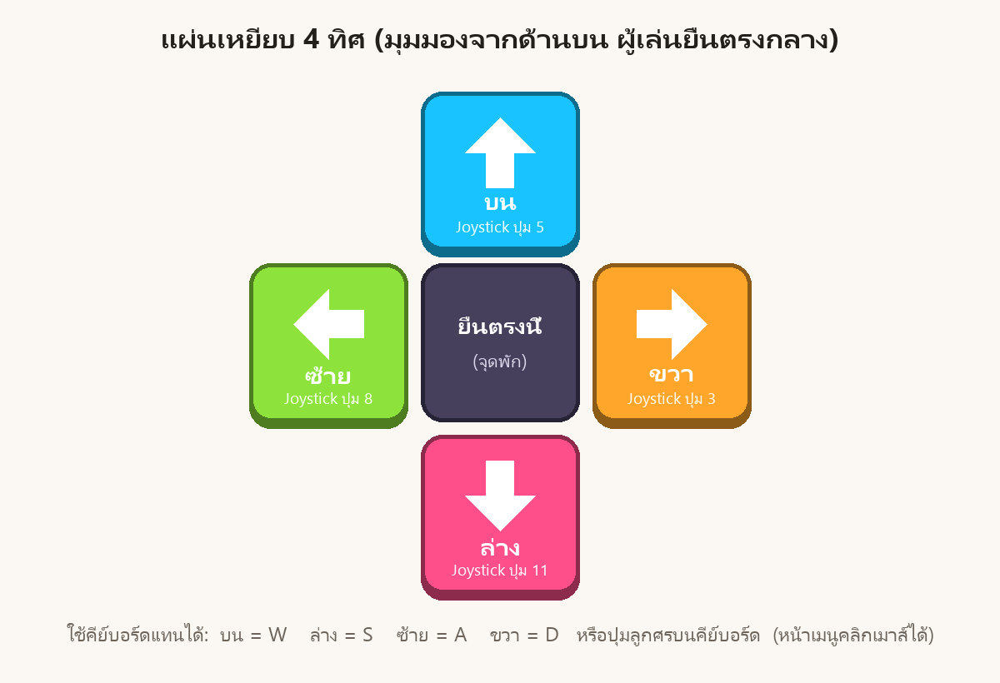
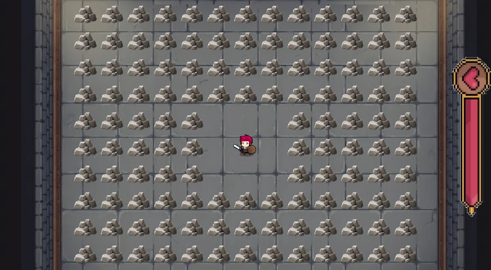
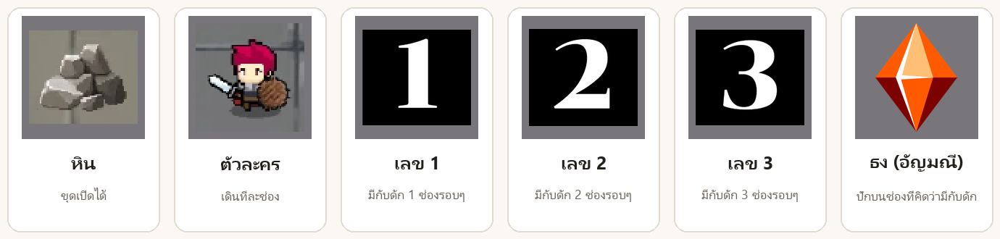
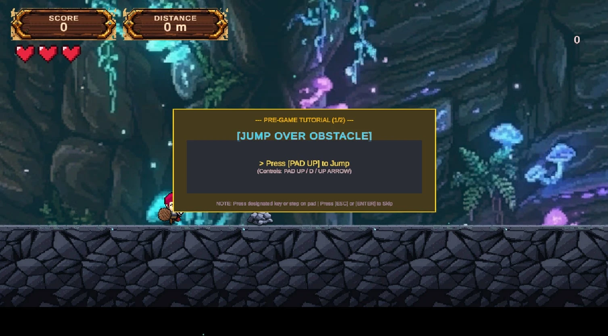
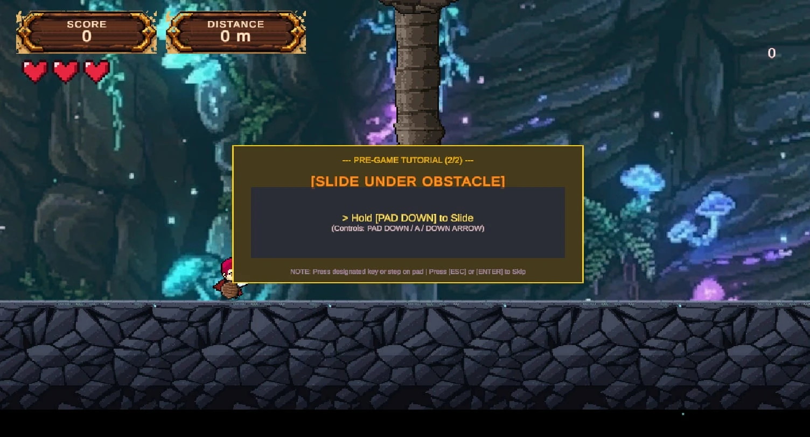
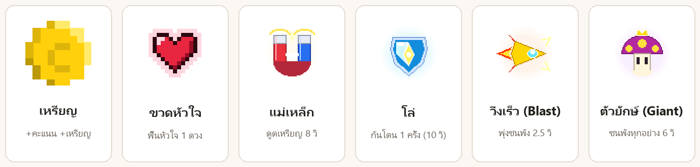
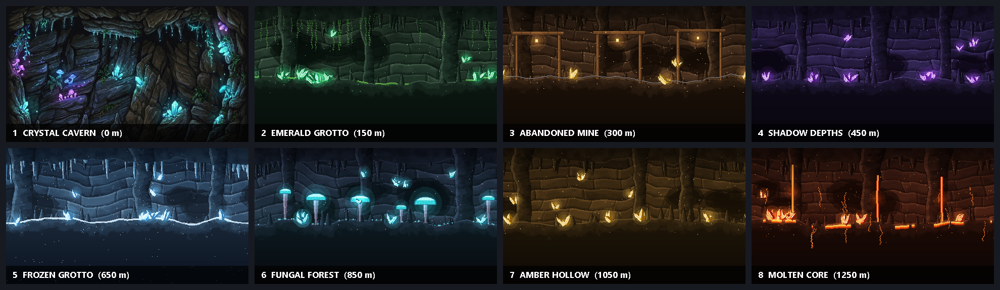
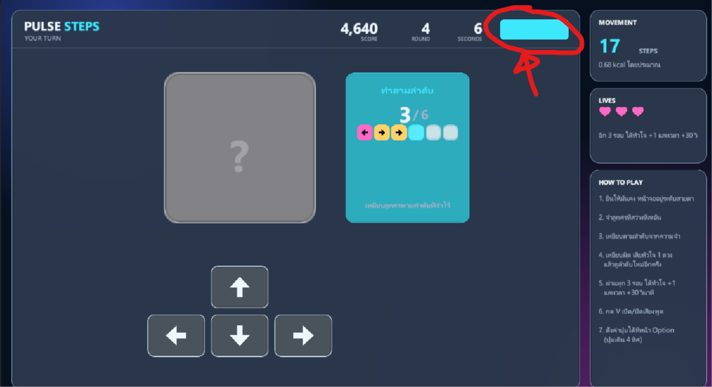
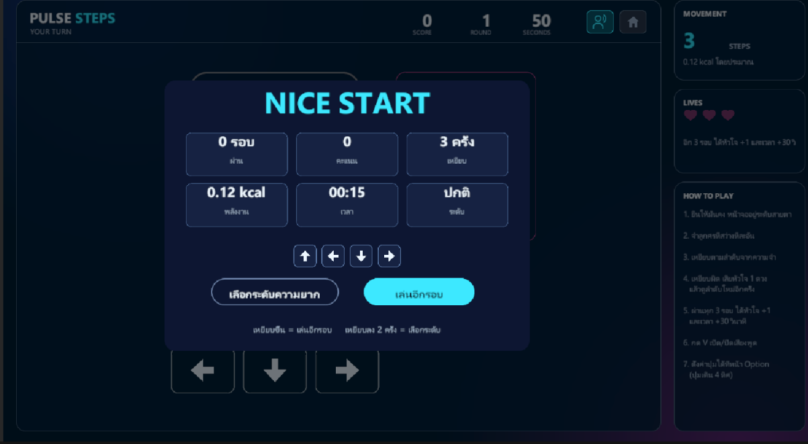

เกมออกกำลังกายด้วยแผ่นเหยียบ 4 ทิศ — มี 3 เกม: ถ้ำกู้ระเบิด, วิ่งผจญภัย (Cookie Runner), จำลูกศร (Arrow Memory)
ผู้เล่นยืนตรงกลางแผ่นเหยียบ แล้วก้าวเท้าไปเหยียบแผ่นทิศ บน / ล่าง / ซ้าย / ขวา เพื่อควบคุมเกม แผ่นเหยียบต่อกับคอมพิวเตอร์แบบจอยสติ๊ก ทุกหน้าในเกมใช้คีย์บอร์ดและเมาส์แทนได้ (เหมาะสำหรับทดสอบ)

| การกระทำ | แผ่นเหยียบ | คีย์บอร์ด / เมาส์ |
|---|---|---|
| เลื่อนเลือกปุ่ม | เหยียบ ซ้าย / ขวา | A D หรือชี้เมาส์ |
| ยืนยัน | เหยียบ บน 2 ครั้งติดกัน | W 2 ครั้ง, Enter หรือคลิก |
| การกระทำ | แผ่นเหยียบ | คีย์บอร์ด / เมาส์ |
|---|---|---|
| เลือกเกม | เหยียบ ซ้าย / ขวา | A D หรือชี้เมาส์ |
| เริ่มเกม | เหยียบ บน 2 ครั้งติดกัน | W 2 ครั้ง, Enter หรือคลิก |
| กลับเมนูหลัก | เหยียบค้าง 3 วินาที | Esc |
ผู้เล่นเป็นนักสำรวจในถ้ำที่เต็มไปด้วยก้อนหิน ใต้หินบางก้อนมีระเบิดหรือมอนสเตอร์ซ่อนอยู่ ต้องขุดเปิดหินอย่างระวัง ใช้ตัวเลขบนช่องที่เปิดแล้วเดาว่ากับดักอยู่ตรงไหน แล้วปักธงทับไว้ (หลักการเดียวกับเกม Minesweeper) เมื่อเคลียร์ได้ครบ ประตูทางออกจะเปิด

| ด่าน | รายละเอียด |
|---|---|
| ด่านสอนเล่น (Tutorial) | สอนเดิน ขุด ปักธง ทีละขั้นด้วยข้อความเหนือหัวตัวละคร สอนครบแล้วลูกศรชี้ไปทางออก |
| Cave 1, Cave 2 | ด่านถ้ำปกติ มีระเบิดและมอนสเตอร์ซ่อนใต้หิน |
| Cave 3 | ด่านสุดท้าย มีทั้งระเบิดและมอนสเตอร์ไล่ล่า แสดงหลอดเลือดมอนสเตอร์ที่แถบด้านบน |
| การกระทำ | วิธีเหยียบ | ผล |
|---|---|---|
| เดิน | เหยียบทิศที่ต้องการ 1 ครั้ง | เดินไป 1 ช่อง และหันหน้าไปทางนั้น |
| ขุด / โจมตี | เหยียบทิศเดียวกัน 2 ครั้งติดกันเร็วๆ (ภายใน 0.4 วินาที) | ขุดหินช่องข้างหน้า หรือตีมอนสเตอร์ |
| ปักธง / ถอนธง | เหยียบค้างไว้ประมาณ 0.5 วินาทีแล้วปล่อย | ปักธงบนหินช่องข้างหน้า (ทำซ้ำเพื่อถอน) |
| สกิลขุดวงกว้าง | กด Q บนคีย์บอร์ด (ปลดล็อกเมื่อปักธงถูกครบตามกำหนด) | ขุดเปิดหิน 3x3 ช่องข้างหน้า (ไม่ขุดช่องที่ปักธง) |

แพ้เมื่อ เลือดหมด (เริ่มที่ 100) จะขึ้นหน้าสรุปผลแบบ Game Over
ตัวละครวิ่งไปข้างหน้าเองตลอดเวลา ผู้เล่นต้องกระโดดข้ามหลุมและสิ่งกีดขวาง หรือสไลด์ลอดสิ่งที่ห้อยจากเพดาน เก็บเหรียญและไอเทม และวิ่งให้ได้ไกลที่สุด ยิ่งวิ่งไกล ยิ่งเร็วขึ้นและฉากเปลี่ยนไปเรื่อยๆ
| การกระทำ | แผ่นเหยียบ | คีย์บอร์ด | หมายเหตุ |
|---|---|---|---|
| กระโดด | เหยียบ บน | Space หรือ ลูกศรขึ้น | กลางอากาศเหยียบอีกครั้งได้ = กระโดด 2 ชั้น |
| สไลด์ | เหยียบ ล่าง ค้างไว้ | S หรือ ลูกศรลง | ปล่อยเท้าเพื่อลุกขึ้นวิ่งต่อ |
ก่อนเริ่มวิ่งจริง เกมจะหยุดให้ฝึก 2 ขั้น: กระโดดข้ามหิน และสไลด์ลอดหินย้อย กด Esc หรือ Enter เพื่อข้ามได้



| ไอเทม | ผล |
|---|---|
| เหรียญ | เพิ่มคะแนนและจำนวนเหรียญ |
| ขวดหัวใจ | ฟื้นหัวใจ 1 ดวง (โผล่เฉพาะตอนหัวใจไม่เต็ม) |
| แม่เหล็ก | ดูดเหรียญรอบตัวเข้าหา 8 วินาที |
| โล่ | กันการชนได้ 1 ครั้ง อยู่ได้ 10 วินาที ใกล้หมดจะกะพริบเตือน |
| วิ่งเร็ว (Blast) | พุ่งเร็ว ชนสิ่งกีดขวางแตกกระจาย และลอยข้ามหลุมได้ หมดแล้วอมตะกะพริบสั้นๆ ให้ตั้งตัว |
| ตัวยักษ์ (Giant) | ตัวใหญ่ขึ้น 6 วินาที ชนสิ่งกีดขวางแตกกระจาย |
ทุกครั้งที่ขึ้นระดับ จะมีข้อความเตือนสิ่งกีดขวางใหม่ และมีประตูถ้ำบนพื้นเรียบข้างหน้า วิ่งผ่านประตูแล้วฉากเปลี่ยนเป็นโซนใหม่ ความเร็วเพิ่มขึ้นทีละน้อย สูงสุด 1.4 เท่า ระดับหลังๆ มีหลุมบ่อยขึ้น

| ระดับ | ระยะ | โซน | สิ่งที่เพิ่มเข้ามา |
|---|---|---|---|
| 1 | 0 ม. | Crystal Cavern | หิน หินย้อย หลุม |
| 2 | 150 ม. | Emerald Grotto | หินกลิ้ง |
| 3 | 300 ม. | Abandoned Mine | หินย้อยร่วง |
| 4 | 450 ม. | Shadow Depths | กับดักหนาม |
| 5 | 650 ม. | Frozen Grotto | ความเร็วสูงสุด |
| 6 | 850 ม. | Fungal Forest | เห็ดยักษ์ |
| 7 | 1050 ม. | Amber Hollow | รากไม้ห้อย |
| 8 | 1250 ม. | Molten Core | แท่งคริสตัลแหลม |
หน้าสรุปผลแสดงคะแนน ระยะทาง เหรียญ เวลา แคลอรี่ และสถิติ (จำนวนกระโดด สไลด์ สิ่งกีดขวางที่ผ่าน ระดับที่ไปถึง) เลือกเล่นอีกครั้งหรือกลับหน้าเลือกเกมได้
เกมฝึกความจำ เกมจะแสดงลูกศรทีละตัวเป็นลำดับ ผู้เล่นต้องจำแล้วเหยียบแผ่นตามลำดับให้ถูก ผ่านแต่ละรอบ ลำดับจะยาวขึ้นเรื่อยๆ
| การกระทำ | แผ่นเหยียบ | คีย์บอร์ด / เมาส์ |
|---|---|---|
| เลือกระดับ | เหยียบ ซ้าย / ขวา | A D หรือคลิก |
| เริ่มเล่น | เหยียบ บน | W, Enter หรือคลิก |
| กลับหน้าเลือกเกม | เหยียบ ล่าง 2 ครั้ง | Esc |
| เปิด/ปิดเสียงพูด | - | V หรือคลิกไอคอนคนพูด |
| ระดับ | เวลาเริ่มต้น | ลูกศรรอบแรก | เพิ่มต่อรอบ | ความเร็วแสดง |
|---|---|---|---|---|
| ง่าย | 75 วินาที | 2 ตัว | +1 | ช้า |
| ปกติ | 65 วินาที | 3 ตัว | +1 | ปานกลาง |
| ยาก | 55 วินาที | 4 ตัว | +2 | เร็ว |

หน้าสรุปผลแสดงจำนวนรอบที่ผ่าน คะแนน จำนวนก้าว แคลอรี่ เวลา และระดับความยาก เลือก "เลือกระดับความยาก" "เล่นอีกรอบ" หรือ "หน้าเลือกเกม" ได้

| เกม | วิธีคำนวณ |
|---|---|
| วิ่งผจญภัย, ด่านสอนเล่นถ้ำ | สูตร METs: (METs × 3.5 × น้ำหนัก กก.) ÷ 200 × เวลา (นาที) เกมวิ่ง METs = 5.0, ด่านสอนเล่น METs = 4.0, น้ำหนักเริ่มต้น 60 กก. |
| ถ้ำ Cave 1–3 | (ก้าว × 0.04) + (ขุด × 0.1) + (โจมตี × 0.08) |
| จำลูกศร | จำนวนก้าว × 0.04 (ค่าโดยประมาณ) |
ตัวอย่าง: น้ำหนัก 60 กก. เล่นเกมวิ่ง 5 นาที = (5 × 3.5 × 60) ÷ 200 × 5 = 26.25 kcal